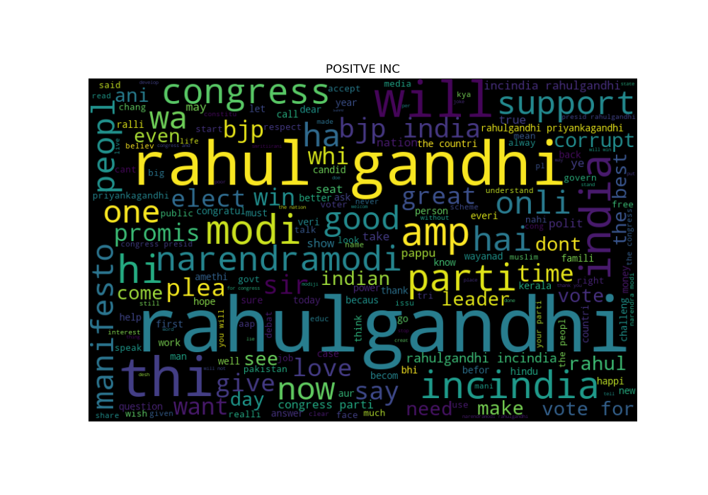
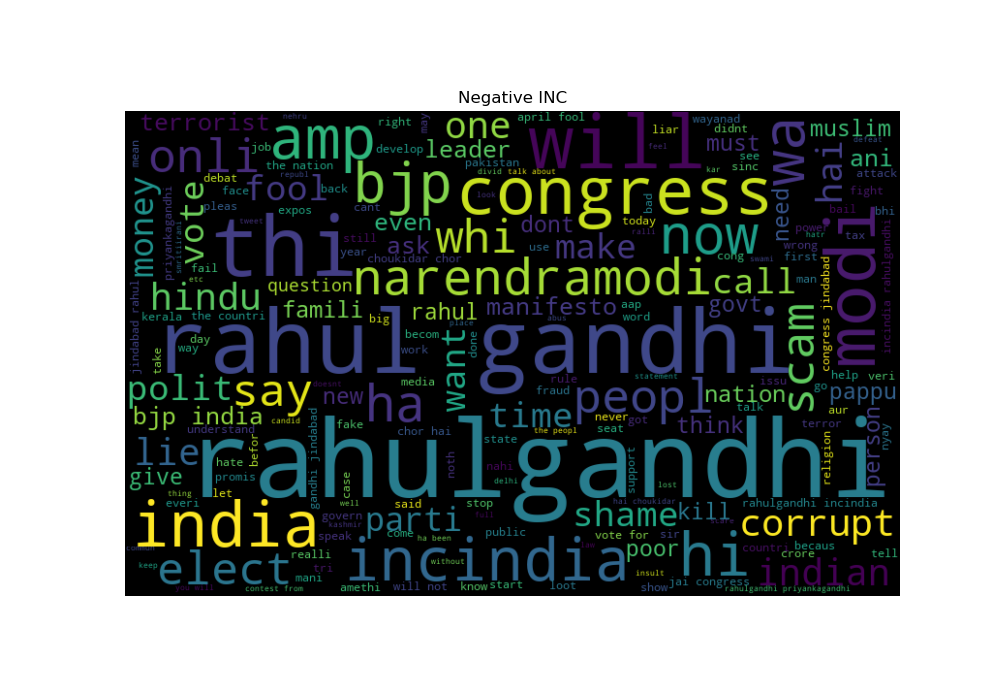
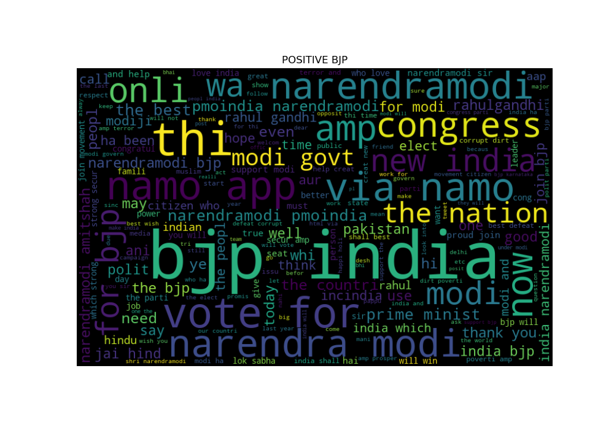
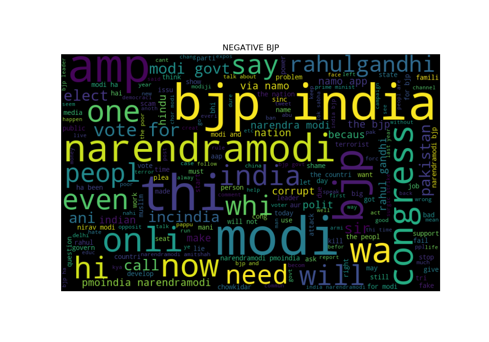
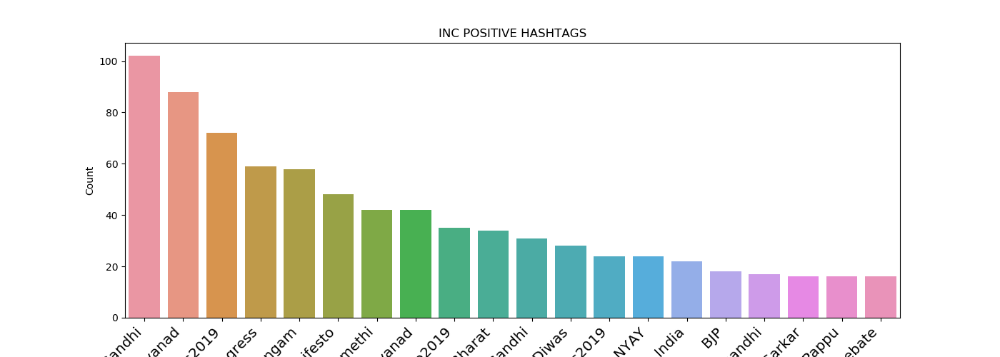
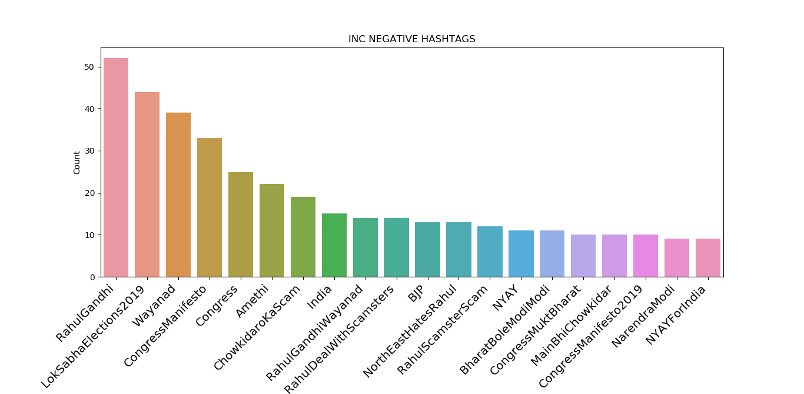
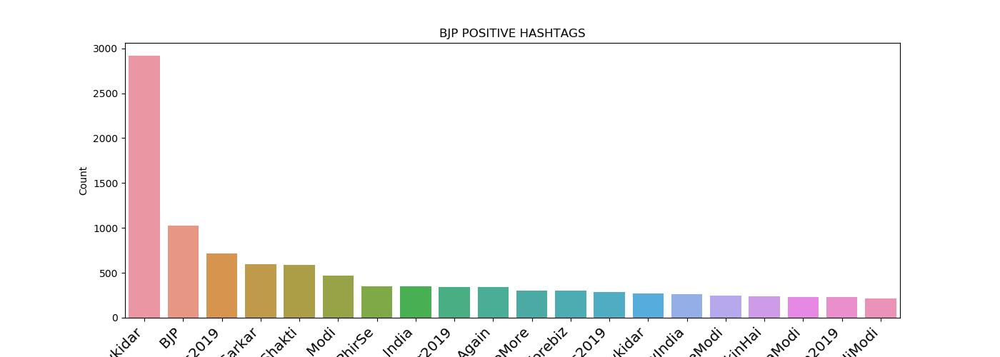
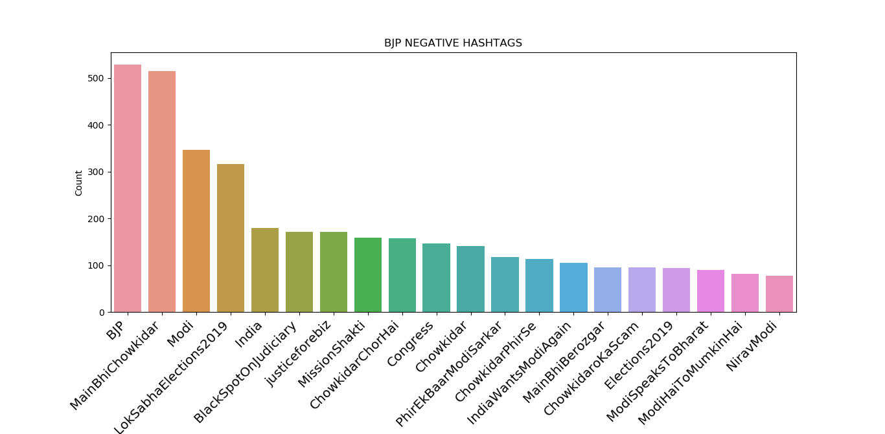

The Final Output:
| Constituency | Winning Candidate Name | Winning Candidate Party |
|---|---|---|
| Bagalkot | Gaddigoudar Parvatagouda Chandanagouda | Bharatiya Janata Party |
| Bangalore Central | P. C. Mohan | Bharatiya Janata Party |
| Bangalore North | D. V. Sadananda Gowda | Bharatiya Janata Party |
| Bangalore Rural | D.K. Suresh | Indian National Congress |
| Bangalore South | Tejasvi Surya | Bharatiya Janata Party |
| Belgaum | Angadi Suresh Channabasappa | Bharatiya Janata Party |
| Bellary | Y. Devendrappa | Bharatiya Janata Party |
| Bidar | Bhagwanth Khuba | Bharatiya Janata Party |
| Bijapur | Jigajinagi Ramesh Chandappa | Bharatiya Janata Party |
| Chamarajanagar | V. Srinivas Prasad | Bharatiya Janata Party |
| Chikkballapur | B. N. Bache Gowda | Bharatiya Janata Party |
| Chikkodi | Annasaheb Shankar Jolle | Bharatiya Janata Party |
| Chitradurga | G. M. Siddeshwar | Bharatiya Janata Party |
| Dakshina Kannada | Nalin Kumar Kateel | Bharatiya Janata Party |
| Davanagere | A. Narayanaswami | Bharatiya Janata Party |
| Dharwad | Pralhad Joshi | Bharatiya Janata Party |
| Gulbarga | Dr. Umesh Yadhav | Bharatiya Janata Party |
| Hassan | Prajwal Revanna | Janata Dal (Secular) |
| Haveri | Udasi S. C. | Bharatiya Janata Party |
| Kolar | S. Muniswamy | Bharatiya Janata Party |
| Koppal | Karadi Sanganna Amarappa | Bharatiya Janata Party |
| Mandya | Sumalatha Ambareesh | IND |
| Mysore | Prathap Simha | Bharatiya Janata Party |
| Raichur | Raja Amareshwara Naik | Bharatiya Janata Party |
| Shimoga | B.Y.Raghavendra. | Bharatiya Janata Party |
| Tumkur | G. S. Basavaraj | Bharatiya Janata Party |
| Udupi Chikmagalur | Shobha Karandlaje | Bharatiya Janata Party |
| Uttara Kannada | Anant Kumar Hegde | Bharatiya Janata Party |
Some Other Insights:
Positive Wordcloud Indian National Congress

Negative Wordcloud Indian National Congress

Positive Wordcloud Bharatiya Janata Party

Negative Wordcloud Bharatiya Janata Party

Positive Hashtags Indian National Congress

Negative Hashtags Indian National Congress

Positive Hashtags Bharatiya Janata Party

Negative Hashtags Bharatiya Janata Party
